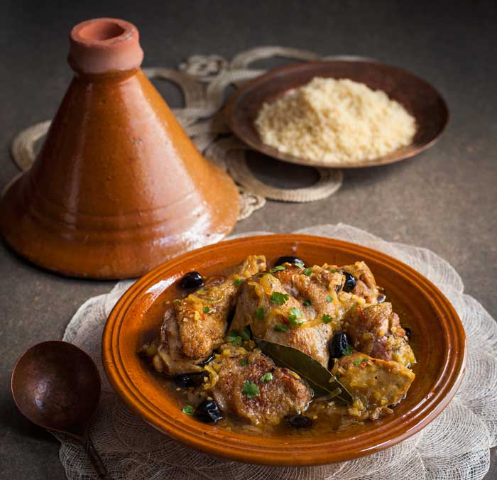

A tajine or tagine is a North African dish, named after the earthenware pot in which it is cooked. It is also called maraq or marqa.
- 1 chicken, about 1.25kg/2lb 12oz
- ¼ tsp ground cinnamon
- 1 tbsp sunflower oil
- 1 large onion, sliced
- 3 garlic cloves, finely chopped
- 5cm/2in piece of root ginger, peeled and grated
- a pinch of ground saffron or turmeric
- 500ml/17fl oz/2 cups hot chicken stock
- 1 bay leaf
- 2 wedges of preserved lemon, rind rinsed and finely chopped
- 12 black olives
- 2 tbsp finely chopped coriander leaves
- sea salt
- couscous, to serve
- lemon wedges, to serve (optional)
- Put the chicken breast-side down on a chopping board. Using a small and very sharp knife, cut through the skin between the thigh and the body. Twist the legs gently to remove them from the sockets. Turn the bird back over and ease the legs gently away from the body. Cut through the skin between the thigh and body as far around each leg as possible, keeping the knife as close to the body as you can.
- Pull the leg away from the body more vigorously and bend it back on itself, so you expose the thigh joint and the ball breaks free of the socket. Cut between the ball and socket to release the leg, and cut through any flesh still attached to the carcass. The “oyster” should still be attached to the thigh.
- Place a leg skin-side up, on a board and cut off the knuckle joint at the end of the drumstick. Feel and bend the joint joining the thigh to the drumstick to locate the gap in the bone. Cut through to split the leg into two. Repeat with the other drumstick and thigh.
- Next, take a breast and wing off the carcass in one piece. To do this, make a cut through the skin and flesh running along either side of the cartilaginous ridge of the breastbone. Cut the breast meat back, from the cavity end of the chicken down towards and under the wing joint, keeping the knife as close to the carcass as possible. Finish by cutting through the joint where the wing is attached, giving you a breast with its wing attached. Repeat with the other breast and wing.
- Lay each of the breast-wing pieces skin-side up on the board and cut slightly on the diagonal into two, leaving about one-third of the breast meat attached to the wing. Season with cinnamon and salt.
- Heat the oil in a heavy-based pan over a medium-high heat and brown the chicken pieces, skin-side down. Remove from the pan and drain on kitchen paper. Add the onion to the pan, cover and sweat for 2–3 minutes until translucent, then add the garlic and ginger and cook for a further 1 minute until the fragrance is released.
- Stir the saffron into the hot stock and return the chicken to the pan. Pour the stock over the chicken and add the bay leaf, then cover and reduce the heat. Simmer for 30 minutes or until the meat is tender. Add the preserved lemon and olives to the pan and cook for another 10 minutes. Stir in the coriander and serve with Couscous and lemon wedges, if you like.